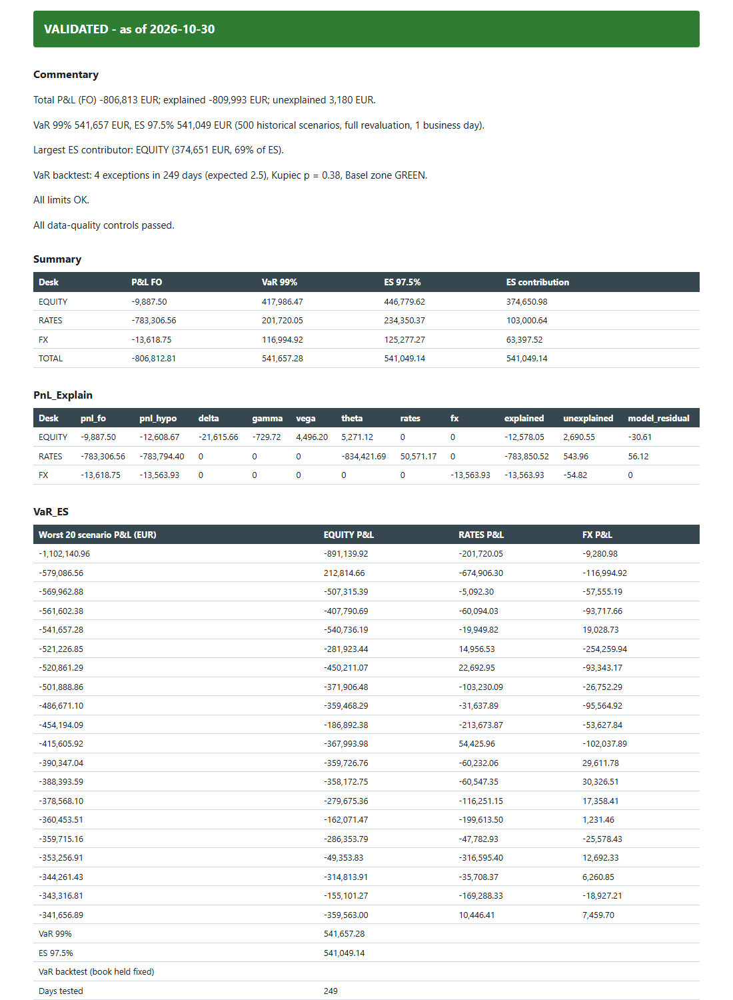
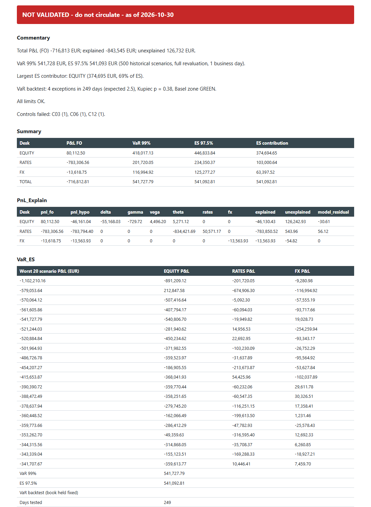

Can we trust today's numbers?
Every morning this chain checks the risk data, computes VaR and P&L explain, and stamps the Excel report validated or not.
Open the rejected dayOpen the clean dayThe 14 controls of the chain, as they come out of the two demo days. Synthetic data.
Two days, same code
The workbook is always produced. Only the banner changes.

The clean dayGreen, ready to circulate
The day with defectsRed, with the failed controls namedWhat happens each morning
Eight CSV extractions, three desks, about 52 positions. Fourteen controls say whether the numbers can be used.
Historical VaR 99% and ES 97.5% with full revaluation, P&L explain, limits, and a VaR backtest that never changes the status.
Inputs, outputs, a SHA-256 manifest and a journal are archived. Replay any day and every number is compared.
8 files
541,657 EUR
python -m riskreport.cli rerun runs/2026-10-30
Measured on simulated days:
Run it on your laptop
pip install -e ".[dev]" python -m riskreport.cli showcase
About twenty seconds. All data is synthetic, and the chain checking itself is not an independent validation.
Get the source